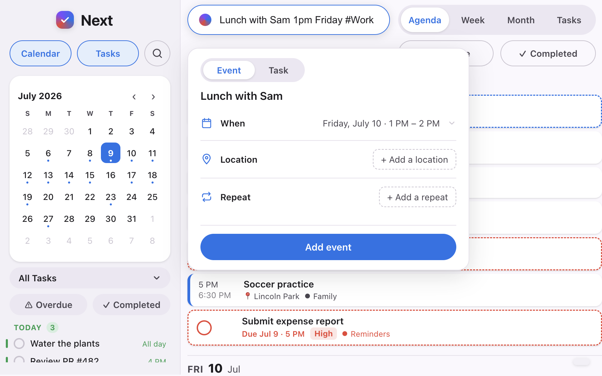
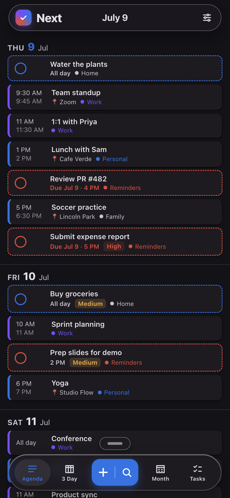

No forms. No pickers. No fuss.
The quick-add bar previews exactly what it will create while you're still typing — the date, the time, and the calendar it belongs on. Capture the plan and get back to your day.

A week you can actually read.
Events and tasks share one honest grid, drawn in your real calendar colors — in light or dark, on Mac and iPhone.

Reschedule by hand
Pick an event up and drop it where it belongs — day to day, snapped to the quarter hour.
Zoom the hours
Stretch the morning or compress the afternoon; the week always fills the screen.
Tasks live here too
To-dos sit beside events with priorities, snooze, and repeats — complete them in place.
The same quiet, in your pocket.
Next for iPhone speaks the same plain English and works with the same Calendar and Reminders — your Mac and iPhone stay in step with no extra setup.


Next has no servers and no accounts. Your calendar is read and written on your device, through Apple's own frameworks — nothing is ever sent to us.
Bring your day together.
For Mac and iPhone, on the App Store.